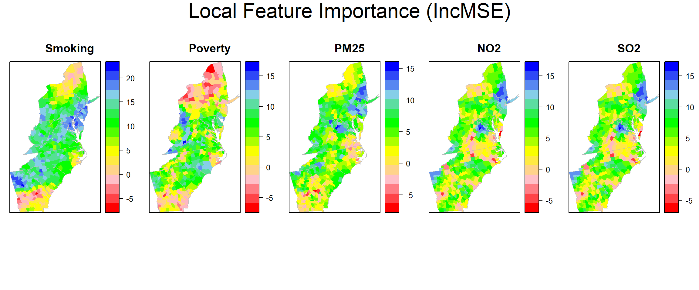
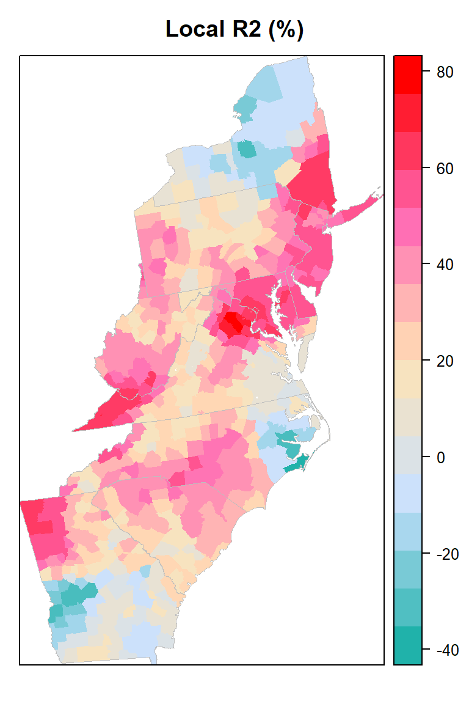

Geographically Weighted Random Forest Regression (GWRFR)
“Geographical Random Forest (GRF) is a spatial analysis method using a local version of the Random Forest Regresson Model. It allows for the investigation of the existence of spatial non-stationarity, in the relationship between a dependent and a set of independent variables. The latter is possible by fitting a sub-model for each observation in space, taking into account the neighbouring observations. This technique adopts the idea of the Geographically Weighted Regression, Kalogirou (2003). The main difference between a tradition (linear) GWR and GRF is that we can model non-stationarity coupled with a flexible non-linear model which is very hard to overfit due to its bootstrapping nature, thus relaxing the assumptions of traditional Gaussian statistics. Essential it was designed to be a bridge between machine learning and geographical models, combining inferential and explanatory power. Additionally, it is suited for datasets with numerous predictors, due to the robust nature of the random forest algorithm in high dimensionality.”
Geographical Weighted Random Forest (GRF) is based on the concept of spatially varying coefficient models (Fotheringham et al. 2003) where a global process becomes a decomposition of several local sub-models and can be used as a predictive and/or explanatory tool (Geogoans et al, 2018).
To implement the GRF we use a recently developed R package SpatialML (Kalogirou and Georganos 2018; “SpatialML.” R Foundation for Statistical Computing)
Load R packages
library(GWmodel) ### GW models
library(sp) ## Data management
library(spdep) ## Spatial autocorrelation
library(RColorBrewer) ## Visualization
library(classInt) ## Class intervals
library(raster) ## spatial data
library(grid) # plot
library(gridExtra) # Multiple plot
library(ggplot2) # Multiple plot
library(gtable)
library(SpatialML) # Geographically weigted regressionLoad Data
The data could be found here.
# Define data folder
dataFolder<-"D:\\Dropbox\\WebSite_Data\\R_Data\\Data_GWR\\"
county<-shapefile(paste0(dataFolder,"COUNTY_ATLANTIC.shp"))
state<-shapefile(paste0(dataFolder,"STATE_ATLANTIC.shp"))
df<-read.csv(paste0(dataFolder,"data_atlantic_1998_2012.csv"), header=T)Scale co-variates
df[, 5:9] = scale(df[, 5:9])Crossvalidation of bandwidth for Geographically weighted RF regression
Tthe local model of random forest uses same syntax used in the randomForest function of the R package randomForest. This is a string that is passed to the sub-models’ randomForest function. For more details look at the class formula.
Coords<-df[ ,2:3]
grf.model <- grf(Rate ~ POV+SMOK+PM25+NO2+SO2,
dframe=df,
bw=40, # a positive number, in the case of an "adaptive kernel" or a real in the case of a "fixed kernel".
ntree=500, # n integer referring to the number of trees to grow for each of the local random forests.
kernel="adaptive", # he kernel to be used in the regression. Options are "adaptive" or "fixed".
forests = TRUE, # a option to save and export (TRUE) or not (FALSE) all the local forests
coords=Coords) # a numeric matrix or data frame of two columns giving the X,Y coordinates of the observationsGlobal Variable Importnace
grf.model$Global.Model$importance ## %IncMSE IncNodePurity
## POV 38.76613 19719.63
## SMOK 72.63104 30393.29
## PM25 16.67705 11847.61
## NO2 26.58366 16538.74
## SO2 17.12622 12072.80Global Mean MSE of 500 tree
mean(grf.model$Global.Model$mse)## [1] 66.40956Global Mean R2 of 500 tree
mean(grf.model$Global.Model$rsq)## [1] 0.5437904Local Model Summary and goodness of fit statistics (training and OOB)
grf.model$LocalModelSummary## $l.IncMSE
## Min Max Mean StD
## POV -5.914213 15.85308 4.634047 4.601986
## SMOK -5.962427 21.46248 11.591109 5.786405
## PM25 -6.299668 14.60851 4.922689 3.995632
## NO2 -5.467337 15.81189 5.314007 4.182360
## SO2 -4.370045 13.71092 4.309744 3.458409
##
## $l.IncNodePurity
## Min Max Mean StD
## POV 134.5841 2781.652 696.6469 394.9578
## SMOK 137.2348 3406.479 975.1391 551.2890
## PM25 141.5919 1721.042 622.7996 279.9274
## NO2 150.8549 2172.585 644.3434 311.9908
## SO2 141.6357 2436.053 607.0374 300.6673
##
## $l.RSS.OOB
## [1] 43292.69
##
## $l.r.OOB
## [1] 0.5534458
##
## $l.RSS.Pred
## [1] 10018.42
##
## $l.r.Pred
## [1] 0.8966623Local feature importance (IncMSE)
county@data$incMSE.SMOK=grf.model$Local.Pc.IncMSE$SMOK
county@data$incMSE.POV=grf.model$Local.Pc.IncMSE$POV
county@data$incMSE.PM25=grf.model$Local.Pc.IncMSE$PM25
county@data$incMSE.NO2=grf.model$Local.Pc.IncMSE$NO2
county@data$incMSE.SO2=grf.model$Local.Pc.IncMSE$SO2Plot local feature importance (IncMSE)
polys<- list("sp.lines", as(state, "SpatialLines"), col="grey", lwd=.8,lty=1)
col.palette<-colorRampPalette(c("blue", "sky blue", "green","yellow", "red"),space="rgb",interpolate = "linear")col.palette.t<-colorRampPalette(c("blue", "sky blue", "green","yellow","pink", "red"),space="rgb",interpolate = "linear")
smok<-spplot(county,"incMSE.SMOK", main = "Smoking",
sp.layout=list(polys),
col="transparent",
col.regions=rev(col.palette.t(100)))
pov<-spplot(county,"incMSE.POV", main = "Poverty",
sp.layout=list(polys),
col="transparent",
col.regions=rev(col.palette.t(100)))
pm25<-spplot(county,"incMSE.PM25", main = "PM25",
sp.layout=list(polys),
col="transparent",
col.regions=rev(col.palette.t(100)))
no2<-spplot(county,"incMSE.NO2", main = "NO2",
sp.layout=list(polys),
col="transparent",
col.regions=rev(col.palette.t(100)))
so2<-spplot(county,"incMSE.NO2", main = "SO2",
sp.layout=list(polys),
col="transparent",
col.regions=rev(col.palette.t(100)))grid.arrange(smok, pov,pm25,no2, so2,ncol=5, heights = c(30,6), top = textGrob("Local Feature Importance (IncMSE)",gp=gpar(fontsize=25)))
Local goodness of fit
county@data$loc_R2=grf.model$LGofFit$LM_Rsq100myPaletteRes <- colorRampPalette(c("lightseagreen","lightsteelblue1", "moccasin","hotpink", "red"))
local_r2<-spplot(county,"loc_R2", main = "Local R2 (%)",
sp.layout=list(polys),
col="transparent",
col.regions=myPaletteRes(100))
#windows(width=4, height=3.5)
#tiff( file="FIG_GWRP_Std_Residuals.tif",
# width=4, height=3.5,units = "in", pointsize = 12, res=1600,
# restoreConsole = T,bg="transparent")
print(local_r2)
#dev.off()